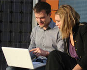

19/11/14: Movilidad

La ETSIT-UPM apuesta por la movilidad internacional de los estudiantes. Acuerdos bilaterales entre la ETSIT y los centros más prestigiosos de los cinco continentes. Programas de doble titulación y otros como Sócrates/LLP (Erasmus), Magalhaes/Smile o Athens son las opciones que los estudiantes de últimos cursos eligen para completar su formación en el extranjero. La oferta de movilidad para el curso 2010/2011 incluirá la posibilidad de que las estancias en las universidades de destino se realicen no sólo por un año, como hasta ahora, sino también por semestres, con el objetivo de poder reconocer créditos optativos de la titulación.